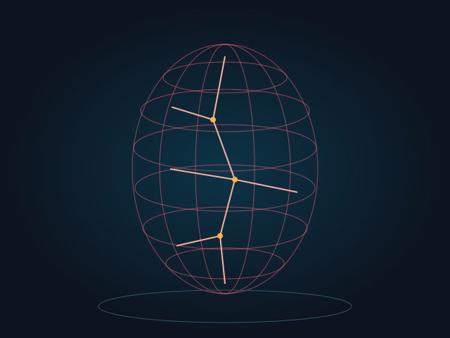

Trustworthy & secure AI
Adversarial testing, multilingual vulnerabilities, prompt injection, data poisoning, privacy, and safeguards for AI-enabled software.
Intelligence, examined. Knowledge, shared.
Building AI we can trust.
Making complex ideas teachable.
I connect research in secure, trustworthy AI with hands-on computing education—helping students ask better questions, build thoughtfully, and test what they create.
01 / About
I’m Julie. My work brings together computing, education, and a long-standing interest in how complex systems behave.
I am a Senior Lecturer in Computer Science and Technology at Kean University, where I teach undergraduate and graduate courses and mentor student researchers. I am also pursuing a Ph.D. in Electrical and Computer Engineering, specializing in machine learning, at Rutgers University.
My background spans a Ph.D. in Finance, software development in laboratory and university settings, and more than a decade of teaching. Today, I focus on the security and trustworthiness of AI systems, multimodal learning, and making emerging technologies accessible to students.
Education & experience02 / Research
From the vulnerabilities of language models to the possibilities of visual learning, research, visualization, and teaching connect my work.

Explore the research domains
Adversarial testing, multilingual vulnerabilities, prompt injection, data poisoning, privacy, and safeguards for AI-enabled software.
Tool authorization, agent orchestration, retrieval quality, runtime monitoring, and human oversight in collaborative AI workflows.
Connecting images, language, video, and 3D representations through computer vision, motion analysis, and auditable evidence.
Interactive scientific storytelling, accessible STEM materials, equitable learning, and student research with responsible use of AI.
Interactive scientific storytelling and 3D representations that help learners inspect complex computational ideas.
Lectures, laboratories, independent studies, capstone projects, and student research with room for experimentation and careful evaluation.
A visual journey through transformer operations, linking explanation to model values.
Watch the walkthroughAn organized way to explore data-poisoning concepts and their relationships.
Explore the repositoryBringing 2D, 3D, and text evidence together in an auditable authentication framework.
Read the research03 / Publications
The complete bibliography from my CV: journal articles, conference papers, posters, preprints, and work in progress. Filter by topic, year, or publication status.
Google Scholar profile ↗Each node is a bibliography record. Lines connect records to their assigned topic, not citations. Position is an illustrative layout.
The topic network requires WebGL. Use the record selector or chronological view to explore the same bibliography.
No publications match your search. Try another keyword or research area.
I publish as Yulia Kumar; earlier work appears under Yulia Rossikova. This bibliography includes every entry from my 2026 CV, with DOI details and additional preprint links from ORCID and publisher records. Conference, journal, and preprint versions may describe related work; the record count is not a count of distinct studies. Accepted and unfinished work is labeled separately. Download bibliography data.
04 / Teaching & mentorship
I bring current research into lectures, laboratories, independent studies, and capstone projects, with room for experimentation and careful evaluation.
I mentor undergraduate, graduate, and high-school researchers in AI and computing. Mentees have coauthored peer-reviewed publications, presented at national conferences, and earned first- and second-place poster awards at Great Minds in STEM.
Discuss a research idea ↗Fundamentals of Computer Science · Computer Programming · Data Structures · Computer Organization and Architecture · Python Programming
Software Development with Frameworks · Web Client-Side Programming · Programming World Wide Web Server · .NET Framework and C# · Graduate Web Design and Development
AI Exploration · Graduate Data Visualization · Agentic AI, retrieval-augmented generation, context engineering, and responsible AI integrated into computing coursework
Undergraduate senior research and graduate independent studies in CS/CIS, including NLP, recommender systems, computer vision, transformers, and distributed machine learning. Academic and transfer-student advisement.
05 / Background
Kean University · Computer Science and Technology
Nelson Labs / Gibraltar Laboratories
Rutgers University · RUCDR Infinite Biologics
MedLabs Diagnostics
Kean University; Moscow Academy of Finance and Law; MIREA – Russian Technological University.
Rutgers University · Machine Learning
Rutgers University · Machine Learning
Kean University · With Distinction / Summa Cum Laude
Minor in Mathematics
Institute of Economics, Russian Academy of Sciences
Plekhanov Russian University of Economics (MESI)
06 / Service & community
Research grows through a community of mentors, reviewers, educators, and students. Service is part of that work.
AAAI-26 Program Committee member; reviewer for IEEE, Springer Nature, and other scholarly venues; guest editor for special issues on real-time video analytics and AI-driven motion prediction.
Co-chair of the NCWIT North New Jersey chapter, regional STEM fair judge, and mentor to students from groups underrepresented in computing.
Three years of service on Kean's University Curriculum and Distance Learning Committee, alongside transfer-student advisement and collaborations involving Kean, Rutgers, and Wenzhou-Kean.
Professional community
IEEE Senior Member · ACM · ACM-W · IEEE Women in Engineering
A conversation is a good place to start.
For research collaborations, student mentorship, and conversations about AI and computing education.
ykumar@kean.edu